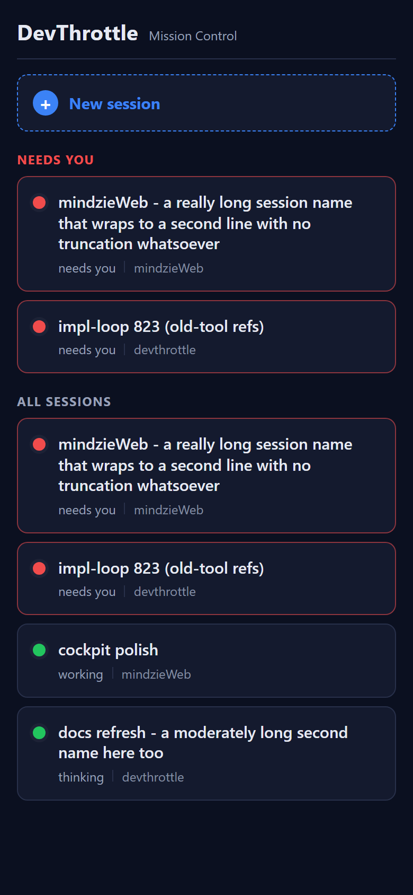
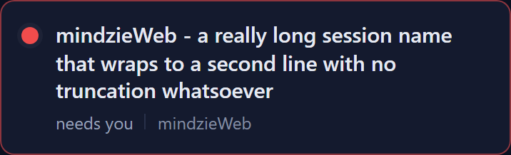
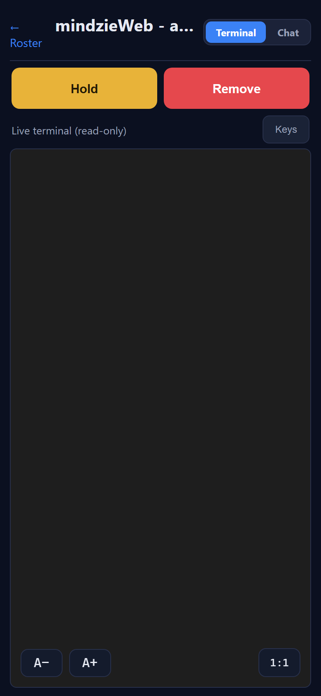

Mobile roster cards: full-width wrapping name (no truncation), repo moved below the name with the status. QA Agent (CenCon Development Method), independent of the Developer Agent's binary, screenshots, and harness. PR #840, branch issue-838-roster-wrap-name.
QA built the mobile app from the PR branch in its own worktree (npm ci + npm run build = tsc --noEmit + vite build, clean). The built dist/ was served by a QA-written Node static server that mirrors the Gateway: it injects the per-machine token in place of the __GATEWAY_TOKEN__ placeholder in index.html, answers GET /sessions with a crafted roster (a LONG-named needs-you session, a short needs-you, a short working session, a medium working session), and does the SPA fallback for /m/session/<id>. A headless Chromium (Playwright) drove it at a 390 x 844 phone viewport, captured screenshots, and measured live DOM/computed-style metrics per criterion. The bearer header on GET /sessions was captured off the wire.
| # | Criterion | Expected | Actual (QA measured) | Result |
|---|---|---|---|---|
| 1 | Long name shows complete, wrapped, NO truncation/ellipsis, full card width. | Full text across multiple lines; no ellipsis clamp; name spans full width. | white-space: normal, overflow: visible, text-overflow: clip; name client height 59px = 3 lines; scrollHeight == clientHeight (full text rendered, not clipped); scrollWidth ≤ clientWidth (no horizontal truncation); name width 304px = full card body width. The complete 96-character name is visible in qa-after-roster.png / qa-after-longcard.png. |
PASS |
| 2 | Repo rendered below the name, on the same line as the status (e.g. needs you | mindzieWeb); not a right pill. |
Repo under the name beside the status with a thin divider. | For every card the repo element's top is at/below the name's bottom (repoBelowName = true) and the status text and repo share one line (contextRepoSameLine = true), separated by a 1px CSS divider. The old right-pinned pill styling is gone. Screenshot shows needs you | mindzieWeb, working | mindzieWeb, etc. |
PASS |
| 3 | Status / what-is-happening text stays visible on every card. | "needs you", "working", "thinking" visible on each card. | Measured context text present and rendered on all six rows: "needs you" (x2), "working", "thinking". Both a needs-you (red) and a working (green) card are visible together. | PASS |
| 4 | Short/medium ~2 lines; long ~3 lines; no card unnecessarily tall, none truncates. | Short card ~2 lines; long card ~3 lines; nothing clipped. | Card heights: short "impl-loop 823" and "cockpit polish" = 70px (1 name line + meta); medium "docs refresh..." = 89px (2 name lines + meta); long card = 109px (3 name lines + meta). Every row reports nameTruncated = false and fullTextRendered = true. |
PASS |
| 5 | "Needs you" group above "All sessions"; dot color + needs-you attention styling preserved; tap opens the session. | Grouping + colors intact; tap navigates to the session. | Group titles in DOM order = ["Needs you", "All sessions"]. Red dots and a red attention border render on needs-you cards; green dots on working cards (qa-after-roster.png). The dot is top-aligned to the first name line even when the name wraps to 3 lines. Tapping the long card navigated to /m/session/s-long-1 and the session detail screen rendered (qa-after-tap-session.png). |
PASS |
| 6 | Roster loads from GET /sessions via the typed client with the injected Bearer (no data regression). |
2xx /sessions with the bearer header; roster populated. |
Captured request header on GET /sessions: Authorization: Bearer test-bearer-abc123; response status 200; roster populated with all four sessions. window.__GW_TOKEN__ present in the served page. The data path (listSessions() typed client) is unchanged by this PR. |
PASS |



/m/session/s-long-1). (AC5)mobile/src/pages/Home.tsx (SessionRow) and mobile/src/styles.css changed. No backend, data, ordering, or API change; the /sessions typed client is untouched.dotnet build cc-director.sln -c Debug succeeded in the QA worktree.npm ci + npm run build) in CcDirector.Gateway.csproj is gated by RunMobileBuild, true only for Configuration=Release or -p:BuildMobile=true. The Debug build output shows no BuildMobileApp / npm step.security_profile.yaml rule touched - pure mobile front-end layout change. No CenCon doc drift.GET /sessions via the typed client with the injected Bearer (AC6). PASS.